JMS Configuration
Learn how to configure JMS or AMQP to initiate an HTTP/SOAP call that is then sent to JMS in a queue.
Supported Platforms: 7.2
Table of Contents
- Introduction
- General: Create JMS Listener
- Use Case 1: Existing HTTP-based WSDL over JMS
- Use Case 2: Existing JMS-Based WSDL
- Testing and Debugging
Introduction
This topic provides documentation about two typical use cases when working with a JMS (AMQP setup is similar).
The result will allow you to initiate a HTTP/SOAP call (for example, via SOAPUI) that is then sent to the JMS in a queue. The result will be pulled from a result queue and sent back over HTTP to the client.
General: Create JMS Listener
For both use cases a JMS Listener must be configured first.
Client libraries
For the different JMS vendors you need to deploy client libraries of the target system into the Network Director instance you are planning to use for the connections. Those are typically version dependent and should be taken from the actual JMS server you are binding to.
- Copy them to your Network Director deploy directory, then restart the instance:
cp clientLibs.jar /opt/soa/sm70/instance/NetworkDirectorForJMS/deploy/
ActiveMQ
- The client library is called
activemq-all-VERSION.jar and can be found in the root directory of the ActiveMQ installation.
Tibco EMS
- The client libraries are called
tibcrypt.jar, tibjmsadmin.jar, jms.jar and tibjms.jar and can be found in the folder /yourTibcoInstallation/ems/VERSION/lib.
Note: Some versions of the libraries do not expose all needed classes so rebinding them might be needed. Contact Akana Customer Support or Professional Services if you need help. This has been discovered on Tibco version 7.0. but might be true for other versions too.
Configuring Network Director
- Choose Add Container Listener and select JMS as Listener Type. In the following window provide the connection details of the JMS server:
- JNDI URL - Address of the server, for example
tibjmsnaming://tibco.emeademo.de:7222 (Tibco) or tcp://activemq.emeademo.de:61616 (ActiveMQ)
- JNDI Initial Context -
com.tibco.tibjms.naming.TibjmsInitialContextFactory (Tibco) org.apache.activemq.jndi.ActiveMQInitialContextFactory (ActiveMQ)
- JMS Destination Factory Name - Depending on the JMS server configuration, for example
ConnectionFactory
- If you need to enter credentials or other specific parameters for the connection to the server use the Add Property link and add the parameters. Refer to JMS Additional Properties for the available options.
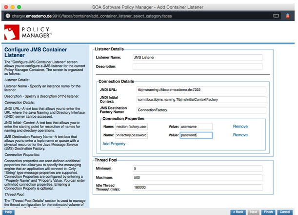
back to top
Use Case 1: Existing HTTP-based WSDL over JMS
This use case is based on the assumption that a WSDL for the underlying service is existing with the HTTP binding.
Create Physical Service
- Create a new physical service by providing the WSDL.
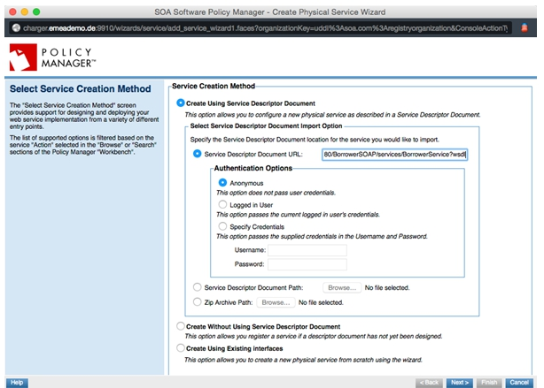
- Choose Do not manage this time when being asked to create virtual service.
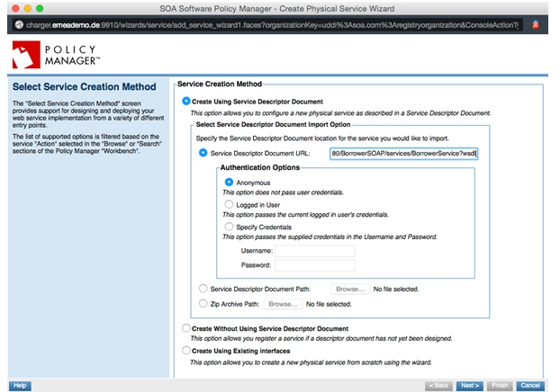
Add SOAP/JMS Binding
- Go to Configure > Binding and select Add Binding.
- Use the search field to find the physical service you just created in the drop-down.>
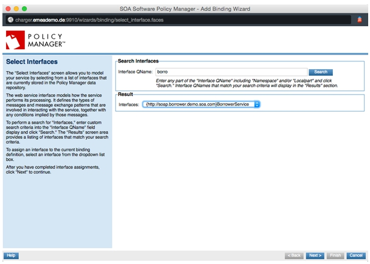
- Choose SOAP 1.1 or SOAP 1.2 according to your physical service.
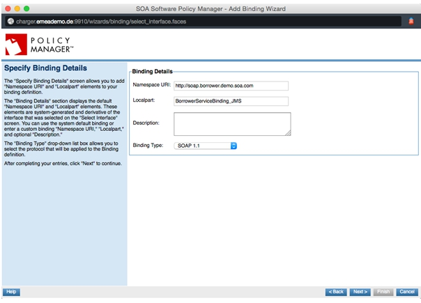
- On the next screen, choose
JMS for Transport and the Transport URI depending on the JMS server you are using.
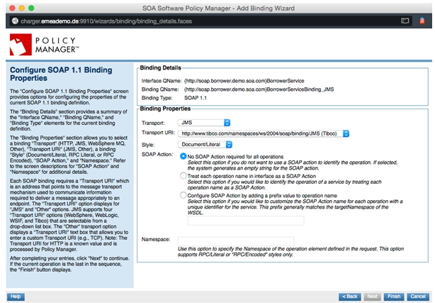
- For the SOAP action, check with the WSDL and JMS server setup for what option to choose.
Create Virtual Service for JMS
- Navigate to your physical service and select the Virtualize Service from the Actions Portlet.
Hint: Call the service YourServiceName_JMS so it can be easily identified.
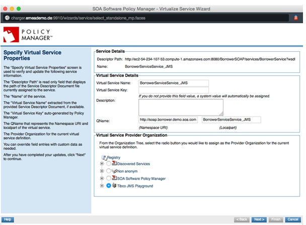
- Choose Select Container later, then Finish.
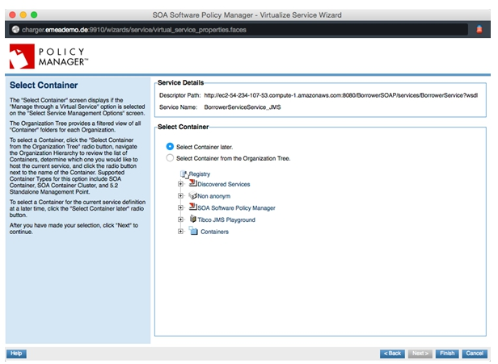
Manage Bindings
- In Service Overview > Interfaces and Bindings, select Manage Bindings.
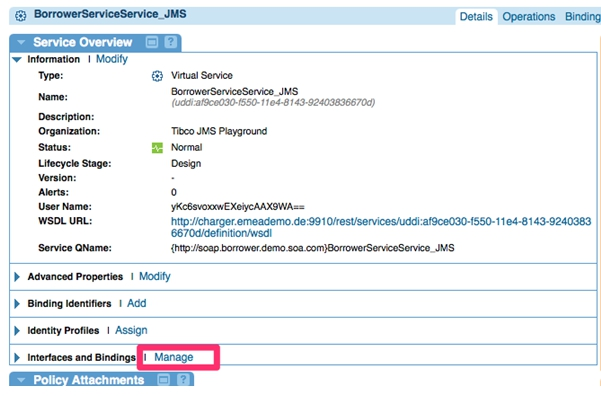
- Change the binding from the original SOAP/HTTP to the newly created SOAP/JMS.
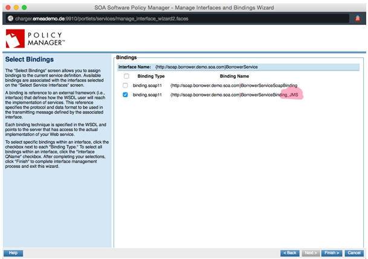
Add Access Point
- Add a new Access Point for your virtual service.
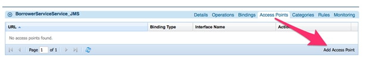
- Choose the Network Director instance which has been configured for JMS (see above).
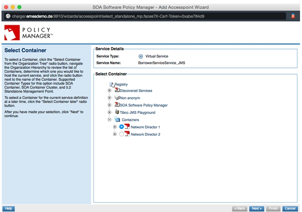
- Make sure to choose the right JMS Listener for your JMS server.
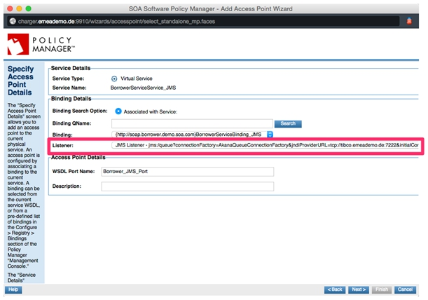
- Add the parameter for the destination Queue.
- For our use case and depending on the configuration of the server you need to also define the reply queue name. This is either a fixed one or you can choose to have a temporary one being created on each request.
- For a temporary queue, set the
jms.use.temporaries to true.
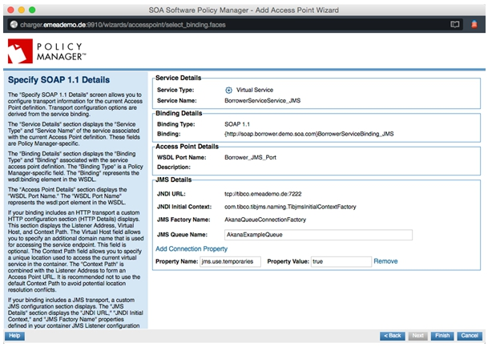
- For a fixed reply queue, set the
jms.replyto.name to the name of the reply queue.
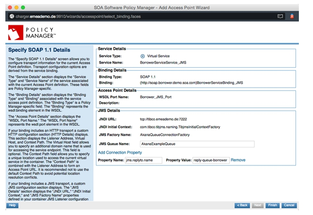
- See also the JMS Additional Properties for more parameters.
Create Virtual Service for HTTP
- Virtualize your just created JMS virtual service.
- Hint: Name it
YourServiceName_JMS_HTTP so it can be easily identified.
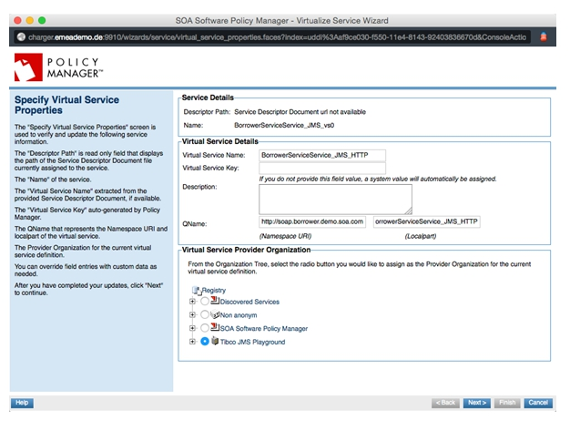
- Once again choose to Select Container later:
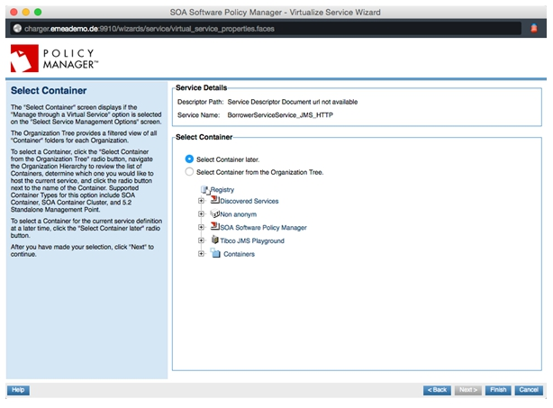
- Manage the binding of the just created virtual service.
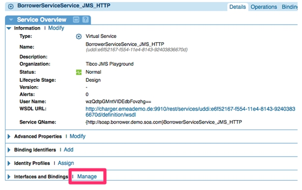
- Choose the non-JMS binding of the service (the opposite of what you did in the first virtual service). This HTTP-based binding has been already generated at the creation of the physical service in this use case.
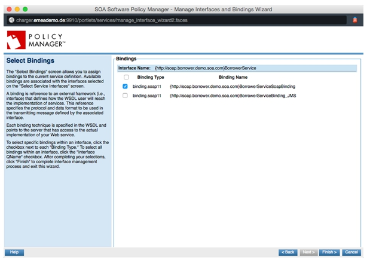
- Create an access point for the new virtual service.
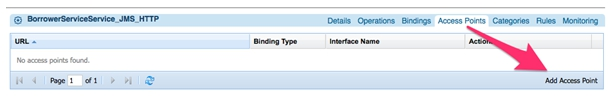
- Choose a container with a HTTP binding. In typical scenarios this is a different one than the one with the JMS Listener.
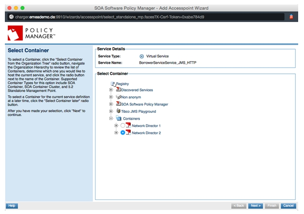
- Choose your HTTP Listener.

- Choose virtual host and context path
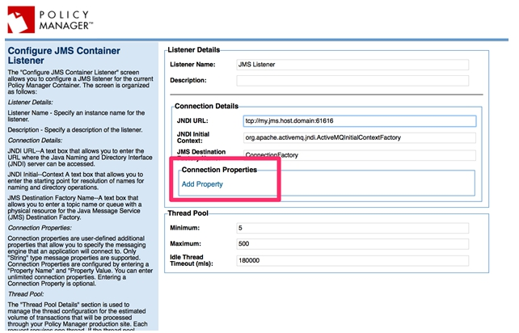
- The configuration is complete. Grab the WSDL of this virtual service and start sending messages to the service. Be sure to have authentication policy or contract applied.
back to top
Use Case 2: Existing JMS-Based WSDL
This use case is about having a WSDL with JMS binding included. This means we will have the physical service being JMS and consumed over a virtual HTTP-based service.
Create Physical Service
- Create a physical service using the existing WSDL with a JMS binding.
Checking WSDL
- Important note: Some JMS servers do provide vendor specific JMS binding properties in the WSDL. Those entries might be in a format which cannot be imported directly in the Policy Manager and therefor will be configured manually (see below). In this case remove the wsdl:port from the WSDL before importing.
<wsdl:service name="serviceESB">
<wsdl:port name="serviceJMS" binding="tns:serviceJMS">
<soap:address location=""/>
<jndi:context>
<jndi:property name="java.naming.factory.initial" type="java.lang.String">com.tibco.tibjms.naming.TibjmsInitialContextFactory</jndi:property>
<jndi:property name="java.naming.provider.url" type="java.lang.String">tcp://tibco.emeademo.de:7221</jndi:property>
</jndi:context>
<jms:connectionFactory>QueueConnectionFactory</jms:connectionFactory>
<!--The element targetAddress value (targetQueue) is the jndi name of the destination. Please replace this with physical destination name at the service consumption point.-->
<jms:targetAddress destination="queue"> targetQueue</jms:targetAddress>
</wsdl:port>
</wsdl:service>
Import WSDL
- Select Create Physical Service and import the WSDL.
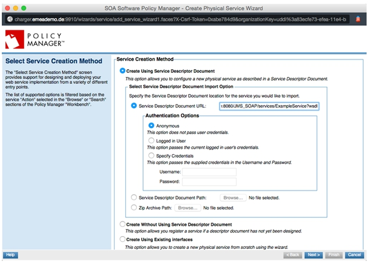
- Choose to virtualize the service later.
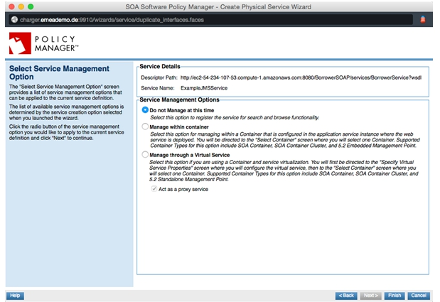
Add JMS Binding
- This task is only required if you need to remove the wsdl:port (see above). Otherwise the binding is already configured automatically.
- Go to Configure > Bindings and select Add Binding.
- Choose the interface of your service:
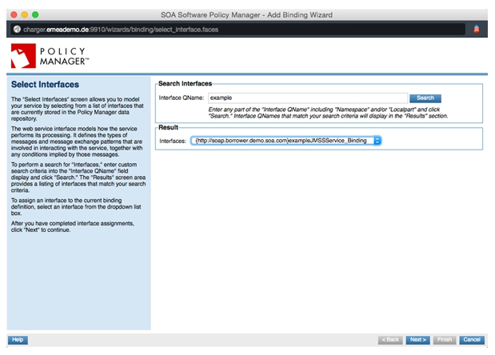
- Choose Binding Type
Messaging.
- Choose Transport JMS and Transport URI depending on your JMS server.
- For the operations in the service choose the right parameters for the queues and content types (see screenshot for example).
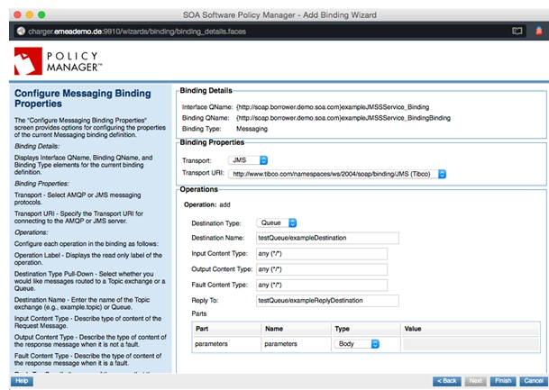
- Add the binding to the service by choosing the Manage link on Interfaces and bindings.
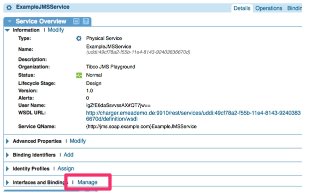
- Choose your created JMS binding.
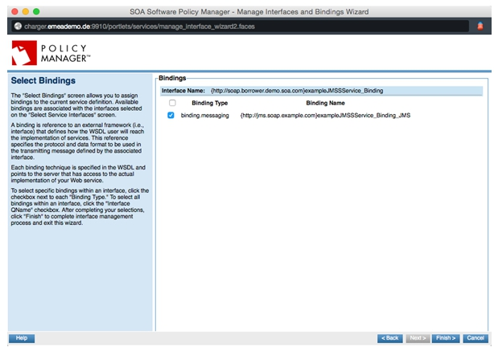
Add Access Point
- Add an access point to the physical service.
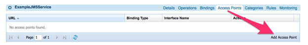
- Choose the Network Director instance with JMS Listener configured.
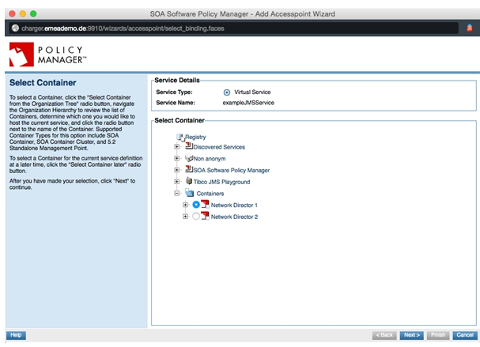
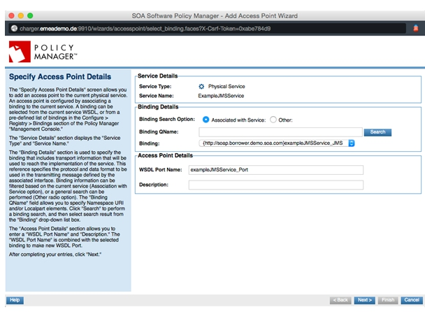
- Set the parameters according to the JMS server.
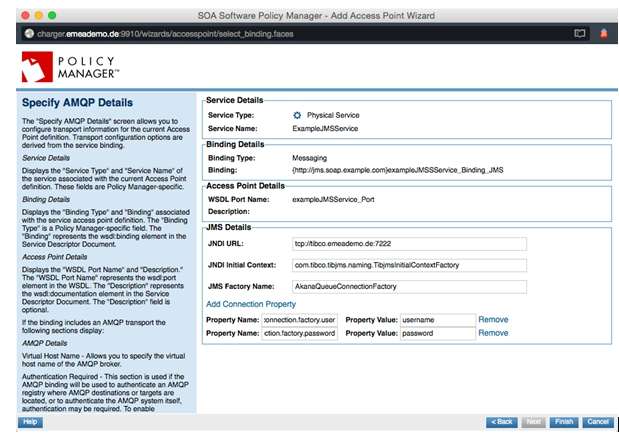
- JNDI URL - Address of the server, for example
tibjmsnaming://tibco.emeademo.de:7222 (Tibco) or tcp://activemq.emeademo.de:61616 (ActiveMQ)
- JNDI Initial Context -
com.tibco.tibjms.naming.TibjmsInitialContextFactory (Tibco) org.apache.activemq.jndi.ActiveMQInitialContextFactory (ActiveMQ)
- JMS Destination Factory Name - Depending on the JMS server configuration, for example
ConnectionFactory
Those parameters are inherited from the Network Director instance.
- If you need to enter credentials or other specific parameters for the connection to the server use the Add Property link and add the parameters. See JMS Additional Properties for the available options.
Virtualize Service as HTTP
- Choose Virtualize Service on your physical service.
- Select the container later.
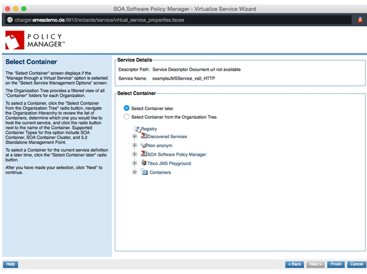
Create a HTTP binding
- Navigate to Configure > Bindings and select Add Binding to create a new binding.
- Use the search field to find your service in the drop-down.
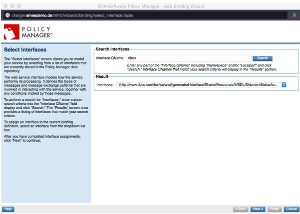
- Choose Binding type SOAP 1.1 or 1.2 depending of your service.
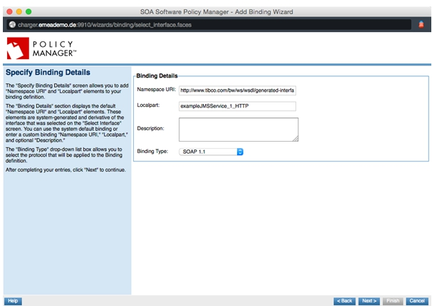
- Choose HTTP as transport, the parameters for SOAP Action depend on the actual service you are configuring.
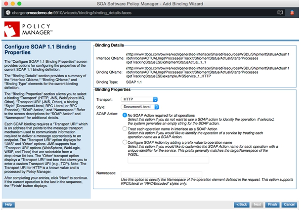
- Manage your virtual service’s Interfaces and Bindings.
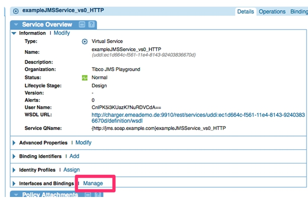
- Choose your just created HTTP Binding.
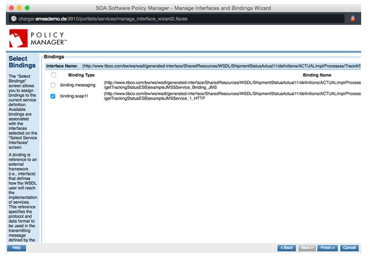
Add Access Point
- Add a new access point for your virtual service.

- Choose a container with an HTTP binding. In typical scenarios this is a different one than the one with the JMS Listener.
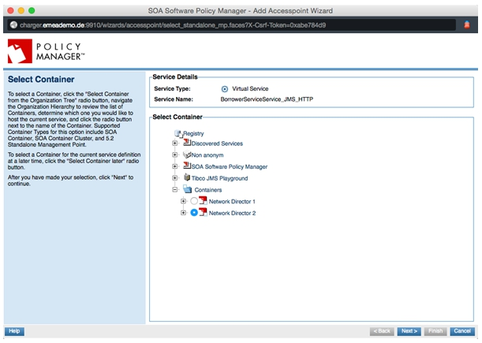
- Choose your HTTP Listener.
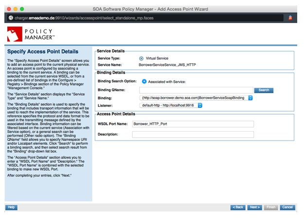
- Choose virtual host and context path:
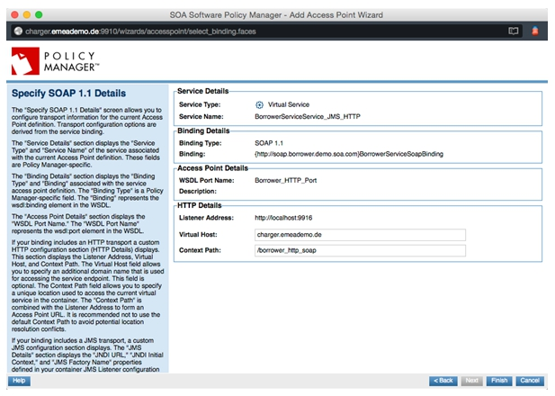
- The configuration is complete. Grab the WSDL of this virtual service and start sending messages to the service. Be sure to have authentication policy or contract applied.
back to top
Testing and Debugging
This section provides some general hints on how to test and debug your settings.
Set Auditing and Debug
For all your virtual services apply the Detailed Auditing Operational Policy.
Also add debug settings to them by configuring the Audit Logging Level using Configure Message Processing.
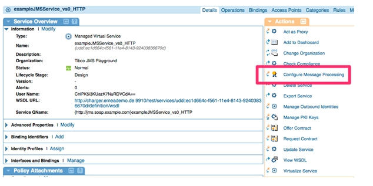
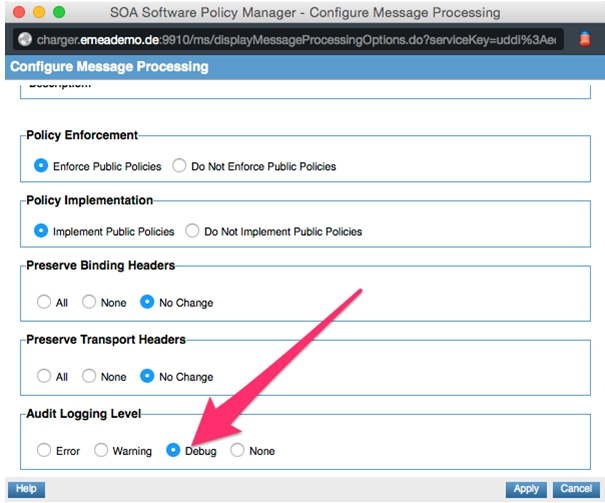
Places to Look for Information
Typically you follow the way of the request through your virtual services, so the Monitoring tab of the virtual services (both Alerts and Logs) is a good point to start.
Also the log files in the file system (instances/yourNetworkDirector/log) to host some more detailed data. Keep in mind that in typical scenarios using two Network Director instances (HTTP and JMS) are involved.
Finally for the overall connection the monitoring of Network Director with JMS configured might show some more logs:
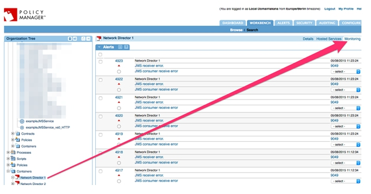
Configure HermesJMS to Have Access to the JMS Queues
For a Tibco EMS the documentation at http://tibcoadmin.com/tibco/ems/configuring-hermesjms-for-tibco-ems/ provides useful setup information.
Other JMS servers are configured in a similar way.
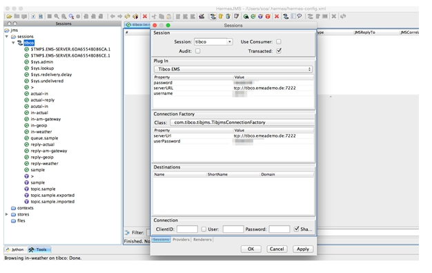
back to top